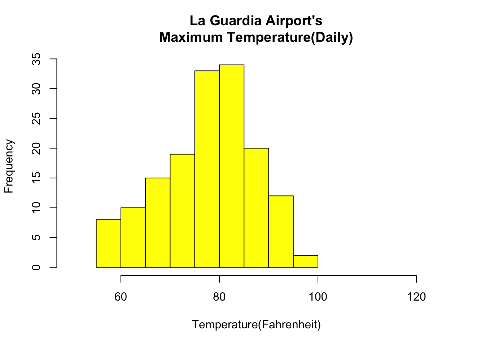

Berk Özcan, I’ve been working as a Senior Data Analyst in Doğuş Teknoloji for almost 2 years. I have 5 years of experience in Analytical departments, before that, I worked as a merchandise planner in several retail companies. One of my biggest aim is after this program, I want to get a promotion to become Analytics Manager. I work with mostly SQL and Python in my current job. With my new skills I believe that I can handle complex problems, also in this field we always have to get to update our knowledge and I could enhance my understanding of data and analytics through my education.
I preferred to watch an introduction video about Git and GitHub. In this video, we can learn the usage of Git and GitHub, why they are important in our life and some bash codes for administrating the pipeline.
Firstly we should understand the notion of version control. With version control, we can manage changes to projects over time, and also we can track changes to files.
There are several reasons why we are using version control:
Collaboration : Simultaneously work on the same orıject
Tracking : Record the development of a project
Restoring versions : Restore older versions of a file
Back-up : Save your work in a remote repository.
WHY GIT:
-Second generation version control system -Unique approach to tracking changes -Streamlined collaboration -Manages evolution of a project -Fast and lightweight branching -Commit messages provide context -Safe testing and experimentation
WHY GITHUB
-Provides cloud storage for our project -Like dropbox but with better features -It allows us to: view and review our work sync with a project *report issues/bugs -contribute to the project -Great way to promote our skills and interests
With this suggested video also ensures how can we use the tool with bash/shell codes.
1.3 R posts relevant to my interests
1.3.1 Basic Visualization with R
### Histogramdata(airquality)hist(airquality$Temp, main ="La Guardia Airport's\Maximum Temperature(Daily)",xlab ="Temperature(Fahrenheit)",xlim =c(50, 125), col ="yellow",freq =TRUE)

### Box Plotdata(airquality)boxplot(airquality$Wind, main ="Average wind speed\at La Guardia Airport",xlab ="Miles per hour", ylab ="Wind",col ="orange", border ="brown",horizontal =TRUE, notch =TRUE)
### Scatter Plotdata(airquality)plot(airquality$Ozone, airquality$Month,main ="Scatterplot Example",xlab ="Ozone Concentration in parts per billion",ylab =" Month of observation ", pch =19)
### Heat Map# Set seed for reproducibility# set.seed(110)# Create example datadata <-matrix(rnorm(50, 0, 5), nrow =5, ncol =5)
Warning in matrix(rnorm(50, 0, 5), nrow = 5, ncol = 5): data length differs from
size of matrix: [50 != 5 x 5]
# Column namescolnames(data) <-paste0("col", 1:5)rownames(data) <-paste0("row", 1:5)# Draw a heatmapheatmap(data)
The downloaded binary packages are in
/var/folders/z6/nz1bbvyn06z34736vzgsqm_40000gn/T//RtmpmzCA40/downloaded_packages
library("ISLR")data <- ISLR::Defaultsummary(data)
default student balance income
No :9667 No :7056 Min. : 0.0 Min. : 772
Yes: 333 Yes:2944 1st Qu.: 481.7 1st Qu.:21340
Median : 823.6 Median :34553
Mean : 835.4 Mean :33517
3rd Qu.:1166.3 3rd Qu.:43808
Max. :2654.3 Max. :73554
Next, we’ll split the dataset into a training set to train the model on and a testing set to test the model on.
#make this example reproducibleset.seed(1)#Use 70% of dataset as training set and remaining 30% as testing setsample <-sample(c(TRUE, FALSE), nrow(data), replace=TRUE, prob=c(0.7,0.3))train <- data[sample, ]test <- data[!sample, ]
Next, we’ll use the glm (general linear model) function and specify family=“binomial” so that R fits a logistic regression model to the dataset:
#fit logistic regression modelmodel <-glm(default~student+balance+income, family="binomial", data=train)#disable scientific notation for model summaryoptions(scipen=999)#view model summarysummary(model)
Call:
glm(formula = default ~ student + balance + income, family = "binomial",
data = train)
Deviance Residuals:
Min 1Q Median 3Q Max
-2.5586 -0.1353 -0.0519 -0.0177 3.7973
Coefficients:
Estimate Std. Error z value Pr(>|z|)
(Intercept) -11.478101194 0.623409555 -18.412 <0.0000000000000002 ***
studentYes -0.493292438 0.285735949 -1.726 0.0843 .
balance 0.005988059 0.000293765 20.384 <0.0000000000000002 ***
income 0.000007857 0.000009965 0.788 0.4304
---
Signif. codes: 0 '***' 0.001 '**' 0.01 '*' 0.05 '.' 0.1 ' ' 1
(Dispersion parameter for binomial family taken to be 1)
Null deviance: 2021.1 on 6963 degrees of freedom
Residual deviance: 1065.4 on 6960 degrees of freedom
AIC: 1073.4
Number of Fisher Scoring iterations: 8
glm(formula = default ~ student + balance + income, family ="binomial", data = train)
Call: glm(formula = default ~ student + balance + income, family = "binomial",
data = train)
Coefficients:
(Intercept) studentYes balance income
-11.478101194 -0.493292438 0.005988059 0.000007857
Degrees of Freedom: 6963 Total (i.e. Null); 6960 Residual
Null Deviance: 2021
Residual Deviance: 1065 AIC: 1073
The coefficients in the output indicate the average change in log odds of defaulting. For example, a one unit increase in balance is associated with an average increase of 0.005988 in the log odds of defaulting.
The p-values in the output also give us an idea of how effective each predictor variable is at predicting the probability of default:
P-value of student status: 0.0843
P-value of balance: <0.0000
P-value of income: 0.4304
Use the Model to Make Predictions:
#define two individualsnew <-data.frame(balance =1400, income =2000, student =c("Yes", "No"))#predict probability of defaultingpredict(model, new, type="response")